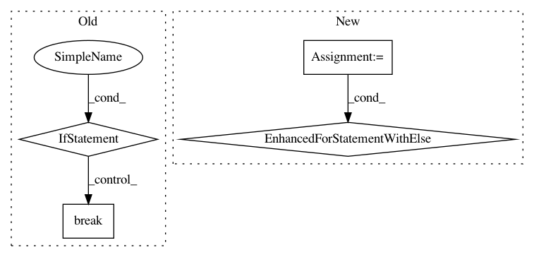

bef7dd92cbdd2c81a7d89786b9a76b011f1bc086,maml_rl/baseline.py,LinearFeatureBaseline,fit,#LinearFeatureBaseline#Any#,29
Before Change
torch.matmul(featmat.t(), returns),
torch.matmul(featmat.t(), featmat) + reg_coeff * eye
)
if not isnan(self.linear.weight).any():
break
reg_coeff *= 10
self.linear.weight.data = coeffs.data.t()
def forward(self, episodes):
After Change
reg_coeff = self._reg_coeff
eye = torch.eye(self.feature_size, dtype=torch.float32,
device=self.linear.weight.device)
for _ in range(5):
try:
coeffs, _ = torch.gels(
torch.matmul(featmat.t(), returns),
torch.matmul(featmat.t(), featmat) + reg_coeff * eye
)
break
except RuntimeError:
reg_coeff += 10
else:
raise RuntimeError("Unable to solve the normal equations in "
"`LinearFeatureBaseline`. The matrix X^T*X (with X the design "
"matrix) is not full-rank, regardless of the regularization "
"(maximum regularization: {0}).".format(reg_coeff))
self.linear.weight.copy_(coeffs.t())
def forward(self, episodes):
features = self._feature(episodes)
In pattern: SUPERPATTERN
Frequency: 3
Non-data size: 4
Instances
Project Name: tristandeleu/pytorch-maml-rl
Commit Name: bef7dd92cbdd2c81a7d89786b9a76b011f1bc086
Time: 2018-06-19
Author: tristan.deleu@gmail.com
File Name: maml_rl/baseline.py
Class Name: LinearFeatureBaseline
Method Name: fit
Project Name: scipy/scipy
Commit Name: 04b8d87d6dfcca50c1244d0f012bbad1ab2e093c
Time: 2011-11-03
Author: johann.cohentanugi@gmail.com
File Name: scipy/optimize/linesearch.py
Class Name:
Method Name: scalar_search_wolfe2
Project Name: CellProfiler/CellProfiler
Commit Name: 4a0065dac12887fc05b015adedd8121b0f027a8d
Time: 2013-03-21
Author: leek@broadinstitute.org
File Name: cellprofiler/modules/calculatemath.py
Class Name: CalculateMath
Method Name: run